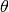
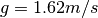

Using SVS¶
This page documents the implementation and usage of SVS. The model is constantly evolving and the documentation may not cover all pertinent features. See the doc strings in the code as these are the most up to date indication of functionality. We are current as of 0.1.
Usage¶
The basic usage of the script displays the iterative deposition of particles in a matplotlib gui window. After the deposition has completed it is possible to save the window to a PNG.
Two plots are displayed, the first is a movie that tracks where particles are deposited. The second, populated at the completion of deposition, is a density map, showing points per grid cell.
Running the iterative deposition¶
To get help, and see available parameters:
$ python simulation2.py --help
To run a basic model with all default ejection parameters:
$ python simulation2.py
Note
The default model emplaces 500 points with ejection velocity between 300 and 325m/s and ejection angle between 30 and 60 degrees. Azimuth of ejection is random.
To provide a fixed ejection angle:
$ python simulation2.py --angle 45
$ python simulation2.py -a 45
To provide your own range of ejection angles:
$ python simulation2.py --angle minAngle maxAngle
$ python simulation2.py --angle 25 75
To provide your fixed ejection velocity:
$ python simulation2.py --velocity 400
$ python simulation2.py -v 400
To provide a range of velocities:
$ python simulation2.py -v 350 425
$ python simulation2.py --velocity 275 450
Altering the grid size¶
By default, the model utilizes a 1000m^2 grid cell to track deposition density. The color bar indicating deposition scales with the data. To alter the grid cell size you can define Pixel Per Grid Cell as :math:: x * 100m, where x is some scalar multiplier. For example, when , grid size is . When , grid size is  . This can be altered using:
. This can be altered using:
$ python simulation2.py --ppg 50
Writing to a shapefile¶
Users can write the resulting model to a shapefile using the following:
$ python simulation2.py --shapefile SOMENAME.shp
Note
The resulting file is ‘timestamped’ with an iteration number. It is therefore possible, as of ArcGIS 10.0 to utilize the time slider to explore the temporality of deposition. We suggest setting the time specification to years when using this type of visualization.
Combining Arguments¶
Combining arguments is completely valid,for example the following would define a custom ejection angle, velocity, and output the results to a shapefile.:
$ python simulation2.py -a 35 80 -v 375 425 --shapefile MyTestRun.shp
Speed¶
Iterative deposition in a live matplotlib windows is suitably fast for low number of n. When n > 10,000 we suggest using the –fast flag. This flag bypasses the interactive visualization and writes directly to a shapefile. In this way, it is no longer possible to visualize the results in matplotlib. The –fast implementation is multicore enabled and will utilize all available processing capability on your machine.:
$ python simulation2.py --fast MyFastShapefile.shp
Warning
It is possible that python will warn you that your output is not a directory. This is because a shapefile with the same name already exists in the directory. Either change the name of your output or delete the old output.
Location¶
Currently this model is focused around the dark ring material eruption (Mare Orientale). The underlying basemap is hardcoded as is the output shapefile. With relatively trivial alteration to the code, it will be possible to extend the model.
Ejection Model¶
We are modeling this ejection using the most basic, atmosphere free, trajectory model. Briefly, here are the steps we take to calculate the position of the deposited material.
Randomly determine the ejection angle, 
Calculate
Randomly determine velocity from the given range,
Compute
Compute total possible theoretical distance:
distance = , where 
Randomly determine some ejection azimuth between 0 and 360.

Next we calculate the idealized height of the projectile over the body at 100m intervals. This interval was selected as it is the nominal resolution of the WAC DTM. We therefore know: total theoretical travel distance, azimuth, height above a planar surface at 100m interval. Using this information we then convert from geographic coordinates to pixel space and:
Extract the underlying topography along the line of travel. This is stored as an nx1 array of elevation data.
Note
We are using a nearest neighbor interpolation. It is possible that the line of travel ‘clips’ the corner of a pixel. We are utilizing the spot elevation at that pixel in our calculation. This should be relatively safe due to Tobler’s first law and the resolution of our data.
Normalize the trajectory elevation to the elevation of the ejection point. To do this we are subtracting the elevation at ejection from each index of the trajectory vector.
Add the absolute value of the elevation vector to the the elevation vector. Here the goal is to have all values
0. This allows for the vectorized computation of elements and is done to speed program computation.
Subtract the elevation vector from the trajectory vector to calculate the distance above our modified topography.
Add the negative offset to the elevation back to the newly generated ‘distance above the topographic surface’ raster.
Note
This will need to be modified to test for sign should the ejection point be higher than 0m.
- Return the index of impact point . This is the total distance in meters that the projectile travelled in pixel space and an estimation (within 99m) of total travel distance.